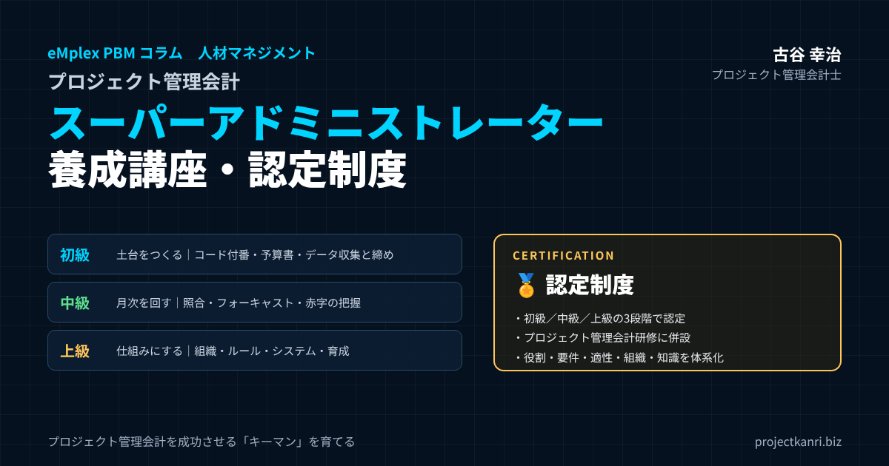

プロジェクト管理会計スーパーアドミニストレーター養成講座―プロジェクト型ビジネスの中心となるキーマンの役割・要件・適性・組織・知識と、初級・中級・上級の育成カリキュラム、認定制度

結論：プロジェクト管理会計の成否は「仕組みを回すキーマン」で決まります
この記事の要点
- スーパーアドミニとは：プロジェクト管理会計の仕組みを毎月回し、現場と経理・経営の数字をつなぐキーマン
- 役割・要件・適性：6つの役割、知識・スキル・権限、会計知識より「締めへの責任感」
- 組織と関係性：CFO直下が理想。PMとは二人三脚、FP&Aとはデータの番人と分析の専門家
- 学ぶべきこと：会計・業務・IT、コード付番、予算・実績・予想、フォーキャスト、赤字・受注損失引当金
- 養成講座と認定制度：初級・中級・上級。プロジェクト管理会計研修に併設して開講
プロジェクト管理会計士の古谷です。以前のコラムで、私がCFOを務めていた会社にいた、一人のアドミニストレーターの話を書きました。社員百五十名ほどの会社で、すべてのプロジェクトの予算書の発行から、検収書の回収、請求、外注費やタイムレポートの締め、実績の報告までを一人で担い、監査法人からも高く評価されていた人です。私は敬意を込めて、彼女のような人を「スーパーアドミニストレーター」、略してスーパーアドミニと呼んできました。
あのコラムには、想像以上に多くの反響をいただきました。「うちにもそういう人がいる」「その人が辞めたら数字が回らなくなる」「そういう人をどう育てればいいのか教えてほしい」。経営者の方からも、管理部門の方からも、そしてアドミニストレーターご本人からも、さまざまな声が届きました。
結論から申し上げます。プロジェクト管理会計の成否は、システムやルールの出来だけでは決まりません。その仕組みを、毎月、期日どおりに、正確に回し続けるキーマンがいるかどうかで決まります。そして、そのキーマンは、偶然に現れるのを待つのではなく、育てることができる存在です。
私は200社を超える会社の経営管理を支援する中で、スーパーアドミニに求められる役割、要件、適性、知識を少しずつ整理してきました。本稿では、その内容を体系的にお伝えするとともに、このノウハウをもとにした独自のオリジナル講座「プロジェクト管理会計スーパーアドミニストレーター養成講座」と、その認定制度を、プロジェクト管理会計研修に併設する形で開講することをご案内します。
▶ スーパーアドミニストレーター養成講座・認定制度のお問い合わせ（プロジェクト管理会計研修のページへ）
プロジェクト管理会計研修（初級・中級・上級）に併設して開講します。日程・受講料は決まり次第ご案内します。
スーパーアドミニストレーターとは：プロジェクト型ビジネスの「数字の要」
スーパーアドミニストレーターとは、プロジェクト型ビジネスにおいて、プロジェクト管理会計の仕組みを日々運用し、現場のプロジェクトと、経理や経営の数字とをつなぐ中心的な存在です。
一般にアドミニストレーターと言えば、事務の処理を担う社員を指します。しかし、プロジェクト型の会社では、その仕事はまったく違う意味を持ちます。売上も原価もプロジェクトごとに発生し、その根拠となる見積書、予算書、検収書、請求書、外注先の書類、タイムシート、経費の精算は、すべてプロジェクトに紐づいています。これらを期日どおりにそろえ、数字と一致させ、経営の判断に使える形に整える仕事は、会社の経営管理の根幹そのものです。
| 職種 | 主な役割 | 数字との関わり |
|---|---|---|
| 一般事務・庶務 | 書類作成・整理、データ入力、来客・電話対応 | 数字の根拠となる書類を扱うが、全体像は持たないことが多い |
| スーパーアドミニ | プロジェクト管理会計の運用、データ収集・締め・照合・報告 | プロジェクトごとの予算・実績・予想を一つに束ねる |
| 経理 | 会計処理、決算、税務 | 会社全体の財務会計の数字をつくる |
| FP&A・経営企画 | 予算策定、業績予測、差異分析、経営への提言 | 数字を分析し、計画と意思決定に使う |
| PM | プロジェクトの遂行、顧客・チーム・品質・納期の管理 | 自分のプロジェクトの採算に責任を持つ |
スーパーアドミニは、一般的な事務職とも、経理とも、FP&Aとも違う、独自の専門職です。経理が会計の処理の専門家であり、FP&Aが分析と計画の専門家であるとすれば、スーパーアドミニは、プロジェクト管理会計の運用の専門家です。現場の言葉と会計の言葉の両方を理解し、その間をつなぐ。この役割を担える人は、どの会社でも多くはありません。
私があえて「スーパー」という言葉を付けているのは、この仕事が、単なる事務の延長ではないことを伝えたいからです。プロジェクト管理会計の入口であるデータの収集と、出口である数字の報告の両方を担い、先を読んで動く。その仕事の価値を、会社として正当に認め、育て、処遇する。そのための共通の言葉として、スーパーアドミニストレーターという名前を使っています。
なぜ今、スーパーアドミニの養成が必要なのか
スーパーアドミニの重要性は、昔から変わりません。しかし今、その養成が急がれる理由がいくつかあります。
一つ目は、属人化のリスクです。多くの会社で、プロジェクトの数字を回しているのは、特定の一人のベテランです。その人が異動や退職でいなくなった途端に、月次の締めが遅れ、案件ごとの数字が出なくなる。こうした事態を、私は何度も目にしてきました。属人化を解消するには、その役割を定義し、知識を体系化し、複数の人を育てるしかありません。
二つ目は、業務の電子化とシステム化です。電子契約、電子請求書、クラウドの会計や勤怠のサービスが広がり、書類を紙で綴じる仕事は減りました。その代わりに、複数のシステムにまたがるデータを、正しく紐づけて管理する仕事が増えています。システムを導入しても、データの入力のルールや締めの運用を担う人がいなければ、システムは期待した効果を生みません。
三つ目は、上場準備や内部統制の要請です。上場を目指す会社では、プロジェクトごとの売上や原価の計上の根拠を、監査法人に説明できなければなりません。証票と数字の一致、承認の記録、締めの手続き。これらを日々担うのは、まさにスーパーアドミニの仕事です。
四つ目は、フォーキャスト経営への移行です。過去の実績を集計するだけでなく、プロジェクトごとの着地の見込みを毎月更新し、赤字を早く見つけて手を打つ経営が求められています。その見込みの数字を現場から集め、整え、経営に届ける役割の担い手が必要です。
そして五つ目は、人材の不足です。経理やFP&Aの人材の採用は年々難しくなっています。外から完成された人材を採るのではなく、社内の事務職や現場の経験者を、プロジェクト管理会計の運用の専門家へと育てる。それが、多くの会社にとって現実的な道だと私は考えています。
あなたの会社にスーパーアドミニは必要か：セルフチェック
自社にスーパーアドミニが必要かどうかを考えるために、次の項目を確認してみてください。当てはまる項目が多いほど、プロジェクト管理会計の運用を担うキーマンの育成が急がれる状態だと言えます。
| No. | チェック項目 |
|---|---|
| 1 | 月次の締めが、毎月決まった日に終わらない |
| 2 | プロジェクトごとの粗利が、月次で経営会議に出てこない |
| 3 | 特定の一人が休むと、プロジェクトの数字が出なくなる |
| 4 | 検収書やタイムシートの提出の遅れが、毎月のように発生する |
| 5 | 会計の数字とプロジェクトの数字が合わず、毎回調整している |
| 6 | プロジェクトの着地見込みを、誰も定期的に集めていない |
| 7 | 赤字のプロジェクトに気づくのが、完了してからになる |
| 8 | 監査の時期になると、証票探しに追われる |
三つ以上当てはまる場合は、すでに数字の信頼性や経営の判断の速さに影響が出ている可能性があります。五つ以上当てはまる場合は、特定の人の頑張りで何とか回っているか、あるいは、すでに回らなくなりつつある状態です。いずれの場合も、まずは今の運用を誰が、どのように担っているのかを書き出すことから始めてみてください。
スーパーアドミニの役割：6つの仕事
スーパーアドミニの役割を、六つに整理します。
| 役割 | 主な仕事 |
|---|---|
| ① 登録と予算書の発行 | プロジェクトコードの付番、予算の内容確認、予算書の発行 |
| ② 実績データの収集と締め | 検収書・請求書・外注書類・タイムシート・経費の回収と月次の締め |
| ③ 証票と数字の整合性 | 見積・予算・検収・請求・発注・工数の照合と不一致の解消 |
| ④ フォーキャストの取りまとめ | PMから残作業の見込みを集め、着地見込みを更新 |
| ⑤ レポーティング | 予算・実績・着地見込みの報告、赤字の兆候の早期通知 |
| ⑥ 監査とシステム運用 | 監査対応、マスタ・アクセス権限の管理、入力ルールの周知 |
一つ目は、プロジェクトの登録と予算書の発行です。受注が決まると、プロジェクトコードを付番し、PMが作成した予算の内容を確認したうえで、会社の正式な予算書として発行します。これが、プロジェクトに工数や費用を計上できるようになる起点です。
二つ目は、実績データの収集と締めです。検収書、請求書、外注先の発注書・検収書・請求書、タイムシート、経費の精算。これらを月次の期日までにそろえ、内容を照合し、締めます。締めの期日を守ることの重要性を誰よりも理解し、現場と信頼関係を築きながら、メリハリのあるプレッシャーをかけて書類を回収する。これがスーパーアドミニの真骨頂です。
三つ目は、証票と数字の整合性の確保です。見積書と予算書、検収書と売上、発注書と外注費、タイムシートと労務費。これらが一致していることを確かめ、不一致があれば原因を突き止めて正します。
四つ目は、フォーキャストの取りまとめです。毎月、PMから残りの作業の見込みを集め、着地見込みを更新します。見込みの提出が遅れているプロジェクトや、前月から大きく変わったプロジェクトを把握し、FP&Aや経営企画に伝えます。
五つ目は、レポーティングです。プロジェクトごとの予算・実績・着地見込みの報告書を、PMや経営陣に届けます。赤字や赤字の兆候があるプロジェクトは、早めに知らせます。
六つ目は、監査とシステムの運用への対応です。監査法人や内部監査からの証票の依頼に応え、システムのマスタやアクセス権限の管理、入力のルールの周知を担います。
これら六つの役割は、すべてを一人で担う必要はありません。会社の規模や体制によって、分担の仕方は変わります。大切なのは、六つの役割のそれぞれについて、誰が責任を持つのかが明確になっていることです。役割の空白があれば、そこで数字が止まります。
スーパーアドミニの要件：知識・スキル・権限
スーパーアドミニに求められる要件を、知識、スキル、権限の三つの面から整理します。
| 区分 | 要件 |
|---|---|
| 知識 | プロジェクト管理会計の基本、売上・原価の計上の考え方、業務の流れ、システムの役割 |
| スキル | 照合・データ加工（表計算）、段取りと期日管理、現場とのコミュニケーション、文書化 |
| 権限 | 締めの期日の設定と督促、未承認案件へのコード発行の保留、異常の上長・経営への報告経路、システムのマスタ管理 |
ここで強調したいのは、権限の要件です。スーパーアドミニが現場に書類の提出を求めても、それを無視されては締めは守れません。締めの期日を守らないプロジェクトについては、上長や経営に報告する経路を持つこと。予算書が承認されていないプロジェクトには、コードを発行しないこと。こうした権限を、会社として明確に与えておく必要があります。権限のないキーマンは、いずれ疲弊してしまいます。
また、スキルの中でも特に大切なのが、コミュニケーションの力です。現場のPMは、顧客との調整や納期に追われており、事務の書類は後回しになりがちです。その中で、相手の状況を理解しながらも、期日は守ってもらう。柔らかさと厳しさを両立させるコミュニケーションは、知識だけでは身につきません。養成講座でも、ロールプレイを通じて重点的に扱います。
スーパーアドミニの適性：どんな人が向いているか
では、どのような人がスーパーアドミニに向いているのでしょうか。私が見てきた優れたスーパーアドミニに共通する適性を挙げます。
| 適性 | 具体的な姿 |
|---|---|
| 期日への責任感 | 締めの重要性を理解し、期日から逆算して動ける |
| 几帳面さ | 数字や書類の小さな不一致を放っておけない |
| コミュニケーション力 | 現場と柔らかく話しながら、言うべきことは言える |
| 全体を見る力 | 一つの書類の不備が後の数字にどう影響するかを想像できる |
| 先を読む力 | 月末に慌てる前に、未提出の書類や遅れの兆しに気づく |
| 誠実さ | 異常やミスを隠さず、早く報告できる |
| 学ぶ意欲 | 会計・業務・ITの新しい知識を吸収し続けられる |
注意していただきたいのは、会計の知識の有無は、適性の条件ではないということです。会計の知識は、後から学ぶことができます。むしろ大切なのは、期日を守ることへの責任感、数字の不一致を放っておけない几帳面さ、そして現場の人と良い関係を築けるコミュニケーションの力です。
実際、私がこれまで出会った優れたスーパーアドミニには、営業事務や一般事務から始めた人、現場のプロジェクトのアシスタントから転じた人、経理の経験者など、さまざまな経歴の人がいました。社内を見渡せば、適性のある人は、すでにいるはずです。経営者や管理部門の責任者の方には、肩書きや経歴ではなく、日々の仕事ぶりから、その人を見出していただきたいと思います。
候補者を見極める際には、実際に小さな仕事を任せてみるのが一番です。たとえば、ある月のタイムシートの未提出者の一覧を作り、督促してもらう。数字の照合を一つお願いしてみる。その仕事の進め方、期日への意識、相手への伝え方を見れば、適性はおおよそ分かります。
スーパーアドミニのマネジメント：評価・処遇・育成
スーパーアドミニを育て、活かすためには、マネジメントの側の工夫も欠かせません。
まず、評価の物差しを明確にすることです。スーパーアドミニの仕事は、うまくいっているときほど目立ちません。だからこそ、成果を測る指標を決めておく必要があります。
| 指標 | 見るポイント |
|---|---|
| 月次締めの日数 | 締めの期日を守れているか、短縮できているか |
| 書類の回収率 | 検収書・タイムシート等の期日内の提出率 |
| 証票と数字の不一致件数 | 照合で見つかった不一致と、その解消までの日数 |
| フォーキャストの提出率・精度 | 見込みの期日内提出と、着地とのずれ |
| 監査での指摘件数 | 証票・計上に関する指摘の有無 |
| 赤字兆候の早期報告 | 兆候を何か月前に報告できたか |
次に、処遇です。スーパーアドミニの仕事を「一般事務」として処遇している限り、優れた人は定着しません。専門職としての等級や職種を設け、認定のレベルに応じて処遇に反映する。キャリアの道筋が見えることで、本人の成長の意欲も高まります。後で述べる認定制度は、こうした処遇の根拠として活用していただくことも想定しています。
そして、一人に頼らない体制をつくることです。どれほど優秀なスーパーアドミニでも、一人ですべてを抱え込めば、その人が休んだときに数字が止まります。業務を標準化して手順書にまとめ、複数の人が担える体制にする。上級のスーパーアドミニには、後進を育てる役割も担ってもらいます。
社内でスーパーアドミニを育てる：最初の90日のプラン
社内の候補者をスーパーアドミニとして育てるときの、最初の九十日のプランの例をご紹介します。
| 期間 | 目標 | 主な取り組み |
|---|---|---|
| 1〜30日 | 全体像をつかむ | 業務の流れと書類・数字の関係を学ぶ、締めの見学、初級の受講開始 |
| 31〜60日 | 担当を持って締めを担う | 少数のプロジェクトで照合・督促を実施、指導役への確認 |
| 61〜90日 | 月次を一通り回し振り返る | 締めの日数・不一致・苦労した点の振り返り、手順書の書き直し |
最初の三十日は、仕事の全体像をつかむ期間です。プロジェクトの流れと、それに伴う書類と数字の関係を学び、先輩のスーパーアドミニや経理の担当者について、実際の締めの作業を見学します。この段階では、一つひとつの作業の手順よりも、なぜその作業が必要なのかを理解することを重視します。
次の三十日は、担当のプロジェクトを持ち、実際に締めを担う期間です。最初は少数のプロジェクトから始め、照合や督促を自分で行います。分からないことや判断に迷うことは、その都度、指導役に確認します。
最後の三十日は、月次のサイクルを一通り自分で回し、振り返る期間です。締めにかかった日数、見つけた不一致、PMとのやり取りで苦労した点を振り返り、手順書を自分の言葉で書き直します。手順書を書き直す作業は、理解を深めるだけでなく、次の人を育てる資料にもなります。
養成講座の初級は、この九十日のプランと並行して受講していただくことを想定しています。講座で体系的な知識を学び、社内の実務で手を動かす。この両輪で、成長の速度は大きく変わります。
あるべき組織とポジション：どこに置き、誰に報告するか
スーパーアドミニを、組織のどこに置くべきでしょうか。会社の規模や事業の形によって答えは異なりますが、代表的なパターンを整理します。
| パターン | 特徴 | 注意点 |
|---|---|---|
| CFO・管理担当役員の直下（推奨） | 中立の立場で締めと証票を守れる | 現場との距離を縮める工夫が必要 |
| 経理部の中 | 会計処理との連携がしやすい | 現場の事情が見えにくくなりがち |
| 事業部の中 | 現場に近く、情報が早い | 事業部の都合が優先され、統制が甘くなるおそれ |
| PMO・管理部門＋事業部担当（大規模） | 管理部門が束ね、担当が事業部に入り込む | 指揮命令と日々の業務の線引きを明確に |
私がお勧めするのは、CFOや管理担当役員の直下に、プロジェクト管理会計を担うチームを置き、スーパーアドミニをその中核に据える形です。事業部の中に置くと、事業部の都合が優先され、締めや証票の確認が甘くなるおそれがあります。一方、経理の中に置くと、現場との距離が遠くなりがちです。管理部門に属しながらも、現場に深く入り込む。この二つを両立させる配置が理想です。
規模が大きくなれば、事業部ごとに担当のスーパーアドミニを置き、管理部門のリーダーがそれを束ねる形にします。指揮命令は管理部門から、日々の仕事は事業部の現場で、という形です。後で紹介するアクセンチュアのプロジェクト管理会計の部署も、この考え方に近い形で機能しています。
いずれの形でも大切なのは、スーパーアドミニの報告の経路を明確にすることです。締めの遅れや数字の異常を、誰に、どのように報告するのか。それが決まっていなければ、問題は現場の中で埋もれてしまいます。
会社の規模別に見るスーパーアドミニの体制
スーパーアドミニの体制は、会社の規模やプロジェクトの数によって変わります。目安となる体制を整理しておきます。
| 規模の目安 | 体制 | ポイント |
|---|---|---|
| 社員〜50名 | スーパーアドミニ1名（総務・経理補助を兼務することも） | 手順書を残し、代わりを務められる人を1名育てる |
| 社員100〜200名 | 2〜3名で分担・相互チェック | 締めの日程と役割分担を明確にする |
| 社員数百名以上 | 事業部ごとの担当＋管理部門のリーダー | 標準化・システム設計・育成を担う上級人材が必要 |
プロジェクトの数や種類によって必要な体制は変わります。
社員が数十名の会社では、一人のスーパーアドミニが、プロジェクトの事務だけでなく、総務や経理の補助まで幅広く担うことが多いでしょう。この段階で大切なのは、その人の業務を手順書に残し、少なくとももう一人が代わりを務められるようにしておくことです。
社員が百名から二百名ほどになると、プロジェクトの数は数十から百を超えます。私がCFOを務めていた会社のスーパーアドミニが担っていたのは、まさにこの規模でした。一人でも回すことはできますが、それは極めて優秀な人がいてこその話です。通常は、二人から三人の体制にして、業務を分担し、互いにチェックし合う形をお勧めします。
数百名を超える規模では、事業部ごとに担当のスーパーアドミニを置き、管理部門にリーダーを置いて全体を束ねます。この段階では、手順やルールの標準化、システムの設計、後進の育成といった上級の役割を担う人が必要になります。
現場・経理・経営企画・FP&Aとの関係性
スーパーアドミニは、社内のさまざまな部門と関わります。それぞれとの関係を整理しておきます。
| 相手 | スーパーアドミニとの関係 |
|---|---|
| 現場（PM・メンバー） | 事務の負担を引き受ける「味方」であり、締めとルールを守る「番人」 |
| 経理 | 整えたデータを会計処理に渡し、会計と管理会計の数字の一致を確認 |
| 経営企画 | プロジェクトごとの実績と見込みを、全社の予算・計画・会議資料の基礎として提供 |
| FP&A | 正確なデータと現場の定性情報を提供し、分析と提言を支える |
| 経営陣 | 赤字の兆候や締めの遅れを、報告経路に沿って速やかに伝える |
現場との関係では、スーパーアドミニは現場の「味方」でありながら「番人」でもあります。現場の事務の負担を減らす手助けをしながらも、締めの期日やルールは曲げない。この両面を持つことで、現場から信頼されます。
経理との関係では、スーパーアドミニが整えたデータが、経理の会計処理の入力になります。プロジェクトごとの売上や原価の計上の根拠を経理に渡し、会計の数字とプロジェクト管理会計の数字が一致していることを、両者で確認します。
経営企画との関係では、スーパーアドミニが集めたプロジェクトごとの数字が、全社の予算や中期計画、経営会議の資料の基礎になります。経営企画が計画を立て、スーパーアドミニが実績と見込みを集める。この連携が、会社の予実管理を支えます。
これらの関係の中で、スーパーアドミニが心がけるべきは、各部門の「翻訳者」になることです。現場の言葉を会計の言葉に、会計の言葉を現場の言葉に置き換えて伝える。たとえば、経理が「期ズレ」と呼ぶ問題を、現場には「今月中に検収書をいただかないと、売上が来月にずれてしまいます」と伝える。こうした翻訳ができる人がいることで、部門の間の誤解や摩擦は大きく減ります。
PMとの関係性：対立ではなく「二人三脚」
スーパーアドミニにとって、最も日常的に関わる相手が、プロジェクトマネージャー、つまりPMです。
PMは、プロジェクトの成功に責任を持つ人です。顧客との調整、チームの管理、品質と納期の確保に追われています。その中で、予算書の作成、見込みの提出、タイムシートの承認、検収書の回収といった事務の仕事は、どうしても後回しになりがちです。
ここで、スーパーアドミニとPMの関係が対立になってしまうと、うまくいきません。スーパーアドミニが書類の提出を催促するたびにPMが煙たがる、PMが期日を守らないたびにスーパーアドミニが疲弊する。こうした関係は、どちらにとっても不幸です。
理想は、二人三脚の関係です。スーパーアドミニは、PMが本来の仕事に集中できるよう、事務の仕事を引き受け、必要な書類の準備を手伝います。その代わりに、PMには、見込みの判断や承認といった、PMにしかできない仕事を期日どおりに行ってもらいます。そして、スーパーアドミニは、プロジェクトの数字の変化をPMに早めに伝え、PMが手を打つ材料を提供します。
| PMが担うこと | スーパーアドミニが担うこと |
|---|---|
| 予算の内容の作成と判断 | 予算書の形式確認・発行、コード付番 |
| 残作業の見込みの判断 | 見込みの回収、不自然な見込みの確認 |
| タイムシート・経費の承認 | 提出状況の管理と督促、締め |
| 顧客への検収の依頼 | 検収予定の把握、検収書の回収・照合 |
| 採算悪化時の対策の立案 | 数字の変化の早期通知、判断材料の提供 |
優れたスーパーアドミニは、PMにとって「数字の相談相手」になります。このプロジェクトは今月どのくらい原価が出ているのか、このままだと粗利はどうなりそうか。PMが気軽に聞ける存在になれば、PMは数字を意識してプロジェクトを運営するようになり、会社全体の採算が良くなっていきます。
PMとの関係づくりで効果的なのは、スーパーアドミニがプロジェクトの立ち上げの打ち合わせに参加することです。最初の段階で、締めの日程、提出してほしい書類、見込みの更新の時期を伝えておけば、PMは事務の仕事を計画に組み込むことができます。後から催促されるよりも、最初に知らされている方が、PMにとってもずっと楽なのです。
FP&Aとの関係性：「データの番人」と「分析の専門家」
FP&Aは、Financial Planning & Analysisの略で、財務の計画と分析を担う機能です。予算の策定、業績の予測、差異の分析、経営への提言などを担います。
スーパーアドミニとFP&Aの関係を一言で言えば、データの番人と分析の専門家の関係です。FP&Aがどれほど高度な分析をしても、その元になるプロジェクトごとのデータが不正確であったり、遅れていたりすれば、分析の結果は信頼できません。スーパーアドミニが、正確なデータを期日どおりにそろえることで、FP&Aは分析と提言に集中できます。
逆に、FP&Aの側から見れば、スーパーアドミニは、現場の事情を最もよく知る情報源です。数字が予算から外れたとき、その背景にどのような事情があるのか。どのプロジェクトで検収が遅れているのか、どのPMの見込みが楽観的すぎるのか。こうした定性的な情報を持っているのが、スーパーアドミニです。
会社の規模が小さいうちは、スーパーアドミニがFP&Aの機能の一部を兼ねることもあります。そして、スーパーアドミニとして経験を積んだ人が、分析や計画の力を身につけて、FP&Aへとキャリアを広げていく道もあります。プロジェクトの数字を、現場の書類の一枚一枚から理解している人は、FP&Aとして非常に強い力を発揮します。
スーパーアドミニの一か月：仕事のリズム
スーパーアドミニの仕事には、月次のリズムがあります。月初は締めの時期です。タイムシート、経費、外注先の請求書の締めを行い、検収書との照合を経て、プロジェクトごとの実績を確定させます。この時期は、未提出の書類の督促と、不一致の解消に追われます。
月の前半の後半は、フォーキャストの時期です。PMから残りの作業の見込みを集め、着地見込みを更新し、経営会議の資料のもとになるレポートを整えます。赤字や赤字の兆候のあるプロジェクトを抽出し、関係者に伝えるのもこの時期です。
月の半ばから後半は、次の締めに向けた準備の時期です。新しく受注したプロジェクトの予算書の発行とコードの付番、今月の納品と検収の予定の確認、外注先への発注の状況の確認を行います。月末が近づけば、提出の予定を一人ひとりに確認して回ります。
このリズムを毎月同じように繰り返すことで、会社の数字は安定して出るようになります。優れたスーパーアドミニは、このリズムを自分の中に持ち、月末に慌てる前に、先回りして手を打っています。
内部監査・監査役・監査法人との関係
スーパーアドミニは、会社の三つの監査、すなわち内部監査、監査役の監査、監査法人の監査のいずれとも関わります。
| 監査 | 主な関心 | スーパーアドミニの関わり |
|---|---|---|
| 監査法人（会計監査） | 売上・原価の期間帰属と金額、仕掛品、受注損失引当金の根拠 | 証票の整理と即時の提示、計上根拠の説明 |
| 内部監査 | 業務ルールの遵守（承認・発注・工数） | ルール運用の当事者として記録を整え、違反を早期に発見 |
| 監査役 | 内部統制の機能、採算管理・赤字対応の状況 | 採算管理の運用状況の説明資料の準備 |
監査法人の監査では、プロジェクトごとの売上や原価が、正しい期間に、正しい金額で計上されているかが確認されます。検収書の日付と売上の計上月、外注先の検収と外注費の計上、期末の仕掛品や受注損失引当金の根拠となる見積りなど、スーパーアドミニが管理している書類とデータが、そのまま監査の対象になります。証票が整理され、すぐに提示できる状態になっていれば、監査は円滑に進みます。
内部監査では、業務のルールが守られているかが確認されます。予算書の承認を経ずにプロジェクトが始まっていないか、発注書なしに外注先に作業を依頼していないか、タイムシートが承認されているか。スーパーアドミニは、こうしたルールの運用の当事者であると同時に、ルールの違反を最初に見つけられる立場にもあります。
監査役は、取締役の職務の執行を監査する立場から、会社の内部統制が機能しているかに関心を持ちます。プロジェクトの採算の管理や、赤字プロジェクトへの対応の状況について、監査役から説明を求められることもあります。
いずれの監査においても、スーパーアドミニに求められるのは、日頃から「説明できる状態」を保っておくことです。監査の直前になって慌てて書類を探すのではなく、毎月の締めの中で、証票と数字の一致を確認し、整理しておく。それが、監査に強い会社の共通点です。
学ぶべき知識：会計・業務・IT
スーパーアドミニが学ぶべき知識を、会計、業務、ITの三つの領域に整理します。
| 領域 | 主な内容 |
|---|---|
| 会計 | 財務会計とプロジェクト管理会計の違い、売上計上の基準、原価の構成、労務費とコストレート、仕掛品、受注損失引当金 |
| 業務 | 受注〜請求、発注〜支払、工数入力〜締め、経費精算、検収、月次決算の流れと書類の関係 |
| IT | プロジェクト管理会計・会計・勤怠・ワークフロー・CRMの役割とデータ連携、表計算での照合、マスタとアクセス権限の管理 |
会計の知識では、まず、財務会計とプロジェクト管理会計の違いを理解することが出発点です。財務会計は会社全体の決算のための会計であり、プロジェクト管理会計は、プロジェクトごとの採算を管理し、経営の判断に使うための会計です。そのうえで、売上の計上の基準、原価の構成、労務費の計算の考え方、仕掛品、受注損失引当金といった、プロジェクト型ビジネスに特有の会計の論点を学びます。
業務の知識では、受注から請求、発注から支払、工数の入力から締めまで、プロジェクトに関わる業務の流れ全体を理解します。どの書類が、どの業務で生まれ、どの数字の根拠になるのか。この全体像を持っていることが、スーパーアドミニの強みになります。
ITの知識では、プロジェクト管理会計のシステム、会計システム、勤怠やタイムシートのシステム、ワークフロー、CRMなどの役割と、それらの間のデータの流れを理解します。表計算ソフトを使ったデータの加工や照合の技術も、日々の仕事で欠かせません。システムを使いこなすだけでなく、マスタの設定やアクセス権限の管理まで担えるようになれば、上級のスーパーアドミニです。
プロジェクトコードの付番：すべての数字の起点
スーパーアドミニの最も基本的な仕事の一つが、プロジェクトコードの付番です。プロジェクトコードは、売上、原価、工数、経費のすべてを、プロジェクトに紐づけるための鍵です。コードの設計と付番のルールが曖昧だと、後からどれほど努力しても、プロジェクトごとの数字は正しく集まりません。
| 項目 | 例・ルール |
|---|---|
| コードの構成 | 年度＋案件種別＋連番（例：26-SI-0123） |
| 付番のタイミング | 受注確定・予算書承認時に正式コードを付番 |
| 提案・受注前の作業 | 提案用コードで工数を記録し、受注後に切替または営業費用として処理 |
| 売上のない作業 | 研究開発・営業活動・教育などにも内部コードを付け、工数を記録 |
| 変わりうる情報 | 事業部・担当者・顧客はコードではなく属性として管理 |
| 変更・廃止 | 一度付けたコードは変えない。完了後はクローズし、新規計上を止める |
付番のルールで大切なのは、コードに意味を持たせすぎないことと、一度付けたコードを変えないことです。コードの中に、年度、事業部、案件の種類などの情報を入れておくと、一覧で見たときに分かりやすくなります。ただし、組織の変更のたびにコードを振り直すような設計は避けるべきです。事業部や担当者といった変わりうる情報は、コードそのものではなく、コードに紐づく属性として管理します。
コードを付番するタイミングも重要です。原則として、受注が決まり、予算書が承認された時点で正式なコードを付番します。ただし、受注の前から提案の作業に工数がかかることもあります。その場合は、提案用のコードを別に用意し、受注後に正式なコードに切り替える、あるいは受注できなかった場合には営業の費用として扱う、といったルールを決めておきます。
社内の研究開発、営業の活動、教育など、売上のない作業にもコードを付け、工数を記録することをお勧めします。これにより、社員の時間がどこに使われているのかが分かり、稼働率の分析にもつながります。
付番のルールは、文書にして社内に公開し、例外の扱いも含めて明確にしておきます。コードの一覧は、スーパーアドミニが一元的に管理し、重複や誤ったコードへの計上が起きないようにします。完了したプロジェクトのコードは速やかにクローズし、誤って工数や費用が計上されないようにすることも大切です。
予算・実績・予想：三つの数字を一つに束ねる
プロジェクト管理会計の基本は、予算、実績、予想の三つの数字です。スーパーアドミニは、この三つの数字を、プロジェクトごとに一つに束ねる役割を担います。
予算は、受注時に決めた、そのプロジェクトの売上、原価、粗利の計画です。実績は、実際に発生した売上と原価です。予想は、実績に残りの作業の見込みを加えた、完了時の着地の見込みです。
三つの数字のうち、どれか一つが欠けても、プロジェクトの状況は正しく分かりません。予算がなければ、実績が多いのか少ないのかを判断できません。実績が遅れていれば、今の状況が分かりません。予想がなければ、これからどうなるのかが分かりません。
スーパーアドミニは、予算書の発行で予算を確定させ、月次の締めで実績を確定させ、PMから見込みを集めて予想を更新します。この三つの数字が、同じプロジェクトコードの下で、同じ形でそろっていることが、プロジェクト管理会計の土台になります。
三つの数字は、毎月同じ形で、同じ日に更新されることが大切です。プロジェクトによって更新の時期がばらばらだったり、予想の数字だけが古いままだったりすると、全社で数字を合計したときに意味のない数字になってしまいます。スーパーアドミニは、この「同じ形で、同じ日に」を守る番人でもあります。
フォーキャストマネジメントでのスーパーアドミニの役割
フォーキャストマネジメントとは、プロジェクトごとの着地の見込みを継続的に更新し、その見込みにもとづいて先手を打つ経営管理の手法です。過去の実績を振り返るだけの管理から、未来の着地を見て手を打つ管理への転換です。
フォーキャストマネジメントを機能させるには、毎月のサイクルを、決まった日程で回し続ける必要があります。そのサイクルの事務局を担うのが、スーパーアドミニです。
| 時期 | スーパーアドミニの仕事 |
|---|---|
| 月末〜第1営業日 | タイムシート・経費・外注請求の締め、未提出者への督促 |
| 第2〜3営業日 | 検収書・請求書との照合、プロジェクト別実績の確定 |
| 第3〜4営業日 | PMから残作業の見込みを回収、不自然な見込みの確認 |
| 第5営業日 | 着地見込みと粗利率の更新、赤字・赤字懸念案件の抽出 |
| 経営会議前 | レポートをFP&A・経営企画・経営陣へ提供 |
このサイクルの中で、スーパーアドミニが特に気を配るべきは、見込みの質です。PMの見込みが、前月と同じ数字のまま更新されていないことはないか。実績の原価がすでに予算に迫っているのに、残りの作業の見込みがゼロになっていないか。こうした不自然な見込みを見つけ、PMに確認するのは、数字を日々見ているスーパーアドミニだからこそできることです。
見込みの精度は、一朝一夕には上がりません。しかし、毎月決まった日に見込みを集め、着地と実績のずれを振り返る習慣を続けることで、PMの見込みの精度は確実に上がっていきます。スーパーアドミニは、その習慣を会社に根付かせる推進役でもあります。
赤字プロジェクトの把握：早く見つけ、早く知らせる
赤字プロジェクトは、ある日突然生まれるのではありません。見積の段階、実行の段階、請求の段階のどこかで生まれた問題が、少しずつ進行した結果です。だからこそ、早く見つけ、早く知らせることが何より大切です。
スーパーアドミニは、赤字の兆候を最も早く見つけられる立場にいます。毎月の締めの中で、プロジェクトごとの原価の消化の状況と、作業の進み具合を見ているからです。
| 指標 | アラートの目安（例） |
|---|---|
| 原価消化率と進捗率の差 | 原価の消化が作業の進捗を大きく上回っている |
| 着地見込みの粗利率 | 予算の粗利率や会社の基準を下回った |
| 見込みの変化 | 前月から着地の原価が大きく増えた |
| 検収の遅れ | 予定月を過ぎても検収書が回収できない |
| 予算外の作業 | 予算にない追加作業や仕様変更の工数が発生している |
基準の数値は会社ごとに設定します。
赤字の兆候を見つけたら、スーパーアドミニは、その事実をPMと上長に速やかに伝えます。大切なのは、赤字を報告した人が責められない文化をつくることです。赤字の報告が遅れる会社では、多くの場合、報告した人が責められています。早く報告したことを評価し、手を打つための議論に時間を使う。スーパーアドミニが安心して異常を報告できる環境を、経営がつくる必要があります。
受注損失引当金：データで支える判断
赤字プロジェクトに関連して、スーパーアドミニが理解しておくべき会計の論点が、受注損失引当金です。
受注損失引当金とは、受注したプロジェクトについて、将来、損失が発生する可能性が高く、その金額を合理的に見積ることができる場合に、損失の見込み額をあらかじめ費用として計上するものです。工事契約や受注制作のソフトウェアについて、見積った総原価が契約の金額を上回る可能性が高い場合などが、その典型です。
受注損失引当金を計上するかどうか、いくら計上するかの判断は、経理や経営、そして監査法人との協議によって行われます。しかし、その判断の材料となるのは、プロジェクトごとの総原価の見積り、つまりフォーキャストの数字です。どのプロジェクトで、総原価の見込みが契約の金額を上回っているのか。その見込みの根拠は何か。スーパーアドミニが、毎月のフォーキャストの中でこうしたプロジェクトを把握し、根拠となるデータを整えておくことで、期末に慌てずに判断できるようになります。
受注損失引当金の実務の詳しい内容は、別のコラムで解説していますので、あわせてご覧ください。
アクセンチュアのプロジェクト管理会計部に学ぶ
スーパーアドミニの役割を考えるうえで参考になるのが、大手のコンサルティングファームにある、プロジェクトの財務を専門に担う部署の存在です。以前のコラムで、アクセンチュアのプロジェクト管理会計の部署の仕事を紹介しました。
そこでは、コストレートとビリングレートの設計、プロジェクトごとの予算の策定と見積の支援、予算と実績のモニタリング、業績の予測、人材の稼働の分析、不採算プロジェクトの予兆の把握、PMへのレポーティングと財務の助言、そして監査に耐える数字づくりといった仕事が、専門の部署によって担われています。
私がこの事例から学ぶべきだと考えるのは、三つの点です。一つ目は、プロジェクトの財務を、バックオフィスの仕事ではなく、プロジェクトの最前線の仕事として位置づけていること。二つ目は、標準化された手法とデータで、多くのプロジェクトを同じ物差しで見ていること。三つ目は、PMのビジネスパートナーとして、数字の面からプロジェクトを支えていることです。
中堅・中小企業が、大手のファームと同じ規模の部署を持つことは難しいでしょう。しかし、その機能の中核を、一人か二人のスーパーアドミニが担うことは可能です。スーパーアドミニは、いわば「自社版のプロジェクト管理会計部」の中心となる存在なのです。
大手のファームの事例から学べるもう一つの点は、プロジェクトの財務を担う人が、専門職として育成され、キャリアを築いていることです。プロジェクトの数字を扱う仕事が、組織の中で正当に位置づけられ、評価されている。この点こそ、多くの日本の中堅・中小企業が取り入れるべきところだと私は考えています。
理想のグループウェア：スーパーアドミニが力を発揮できる基盤
スーパーアドミニがどれほど優秀でも、情報があちこちに散らばっていては、その力を十分に発揮できません。見積書は営業のフォルダに、予算は表計算のファイルに、工数は勤怠のシステムに、外注の請求書はメールに、承認はチャットに。こうした状態では、一つのプロジェクトの全体像をつかむだけで、多くの時間を費やします。
私が理想と考えるグループウェアは、プロジェクトを軸に、情報共有、業務の流れ、管理会計の数字を一つに束ねる基盤です。
| 条件 | 内容 |
|---|---|
| プロジェクトが軸 | 案件ごとに見積・予算・書類・工数・費用・承認がまとまる |
| 一度の入力 | 同じデータを何度も転記せず、システム間で連携する |
| ワークフロー | 予算・発注・支払・経費の申請と承認が記録に残る |
| 証票の紐づけ | 検収書・請求書などの電子の証票がプロジェクトに紐づく |
| リアルタイムの数字 | 予算・実績・着地見込みをいつでも確認できる |
| 権限の管理 | 誰が何を見て、何を操作できるかを役割ごとに設定できる |
このような基盤があれば、スーパーアドミニは、データを集めて転記する作業から解放され、数字の確認、異常の発見、現場への働きかけといった、本来の価値のある仕事に時間を使えます。理想のグループウェアの条件は、プロジェクト管理会計研修の上級でも詳しく扱っているテーマです。
グループウェアを選んだり設計したりする際には、スーパーアドミニの意見を必ず聞いてください。日々データを扱い、現場とやり取りをしている人こそ、どこで手間がかかり、どこでデータが途切れているのかを最もよく知っています。経営や情報システムの部門だけで決めたシステムが、現場で使われずに終わる例は少なくありません。
養成講座のカリキュラム：初級・中級・上級
ここからは、このノウハウをもとにした独自のオリジナル講座「プロジェクト管理会計スーパーアドミニストレーター養成講座」の内容をご紹介します。講座は、初級、中級、上級の三つのレベルで構成しています。
| レベル | 到達目標 | 主な内容 |
|---|---|---|
| 初級：土台をつくる | スーパーアドミニの基本業務を手順どおりに行える | 役割と心構え、プロジェクト管理会計の基本、コード付番、予算書の発行、実績データの集め方、締めの手順 |
| 中級：月次を回す | 月次サイクルを自立して回し、異常を見つけて報告できる | 証票と数字の照合、予算・実績・予想、フォーキャストの取りまとめ、赤字の兆候とエスカレーション、受注損失引当金の材料づくり、監査対応、PMとのコミュニケーション演習 |
| 上級：仕組みにする | 運用を組織と仕組みとして設計し、後進を育てられる | あるべき組織とポジション、ルール・手順書の整備、システム・グループウェアの設計、FP&A・経営企画との連携、育成計画、自社の運用設計案の発表 |
内容は一部変更となる場合があります。
初級は、スーパーアドミニの仕事の土台をつくるレベルです。プロジェクト管理会計の基本、プロジェクトコードの付番、予算書の発行、実績データの集め方と締めの手順を学びます。会計の専門知識がない方でも理解できるよう、基本の用語から解説します。営業事務や一般事務から、プロジェクトの数字を扱う仕事に就く方の最初の一歩として設計しています。
中級は、スーパーアドミニとして、月次のサイクルを自立して回せるようになるレベルです。証票と数字の照合、フォーキャストの取りまとめ、赤字の兆候の把握とエスカレーション、受注損失引当金の判断の材料づくり、監査への対応を学びます。PMとのコミュニケーションのロールプレイも、このレベルで重点的に行います。
上級は、スーパーアドミニの仕事を、組織と仕組みとして設計できるレベルです。あるべき組織とポジション、業務のルールと手順書の整備、システムとグループウェアの設計、後進の育成、FP&Aや経営企画との連携の設計を学び、最終課題として、自社のプロジェクト管理会計の運用の設計案をまとめて発表します。
講座は、講義だけでなく、実際の書類や数字を使った演習を中心に組み立てています。架空の会社の一か月分の見積書、予算書、検収書、請求書、タイムシートを使い、締めから実績報告までを実際に体験する演習は、この講座ならではの内容です。
レベル別のスキルチェックリスト
養成講座と認定制度では、レベルごとに身につけるべきスキルを、次のように定めています。受講を検討される方や、社内で候補者を選ぶ方は、自己評価の目安としてお使いください。
| レベル | できるようになること |
|---|---|
| 初級 | プロジェクトの流れと書類の関係を説明できる／コードを付番ルールに沿って発行できる／予算書の形式を確認できる／締めの手順に沿って書類を回収できる |
| 中級 | 見積・予算・検収・請求・発注・工数を照合し不一致を解消できる／着地見込みを取りまとめ、不自然な見込みを指摘できる／赤字の兆候を基準に沿って報告できる／監査の証票依頼に即応できる |
| 上級 | 業務ルールと手順書を設計できる／役割分担と配置を設計できる／システム・グループウェアの要件を整理できる／後進の育成計画を立て、指導できる |
このチェックリストは、講座の受講前と受講後に自己評価していただくことを想定しています。受講前に「できない」と感じる項目が多いレベルが、まず受講していただきたいレベルです。また、社内でスーパーアドミニの業務の範囲を決める際の、職務記述書のたたき台としても活用できます。
上の表のスキルは、どれも一度覚えれば終わりというものではありません。会社の業務やシステムが変われば、締めの手順も、照合の方法も変わります。スキルを使い続け、更新し続けることが、スーパーアドミニとしての力を保つことにつながります。認定に有効期間を設ける予定であるのも、この考え方によるものです。
スーパーアドミニの育成でよくある失敗
スーパーアドミニの育成に取り組む会社が陥りがちな失敗を挙げておきます。
| 失敗 | 起きること | 対策 |
|---|---|---|
| 権限を与えず責任だけ負わせる | 板挟みで疲弊し、離職する | 督促・保留・報告の権限を明文化する |
| 一人に抱え込ませる | その人が休むと数字が止まる | 手順書と複数担当の体制をつくる |
| 一般事務として処遇する | 優れた人が定着しない | 専門職の等級・認定と処遇を連動させる |
| システム導入で人は不要と考える | データが入らず、システムが機能しない | システム導入と育成を同時に進める |
| 現場への周知をしない | 督促が個人の頼みごとになる | 締めのルールを経営から全社に発信する |
なかでも多いのが、権限を与えずに責任だけを負わせることです。締めを守れと言われても、現場が書類を出さないときに打つ手がなければ、スーパーアドミニは板挟みになり、やがて疲弊して辞めてしまいます。育成は、本人の努力だけでなく、会社の側の環境づくりとセットで進める必要があります。
もう一つは、システムを入れれば人はいらないと考えることです。システムは、データの集計や照合の作業を大きく減らしてくれます。しかし、システムにデータを正しく入れてもらうための働きかけ、例外への対応、数字の異常の判断は、人にしかできません。システムの導入と、スーパーアドミニの育成は、同時に進めるべきものです。
認定制度：スーパーアドミニの力を「見える化」する
養成講座とあわせて、「プロジェクト管理会計スーパーアドミニストレーター認定制度」を設けます。スーパーアドミニの仕事は、うまくいっているときほど目立たず、その力を社内外に示す方法がありませんでした。認定制度は、その力を客観的に示し、本人のキャリアと、会社の処遇の根拠にしていただくためのものです。
| 認定 | 主な要件（予定） | 認定者に期待する役割 |
|---|---|---|
| 初級認定 | 初級の修了＋確認テストの合格 | 手順に沿って基本業務を確実に担う担当者 |
| 中級認定 | 中級の修了＋実務課題（自社の月次締め・フォーキャストの運用フロー設計）＋一定の実務経験 | 事業部などの単位で月次の運用を自立して回す担当者 |
| 上級認定 | 上級の修了＋最終課題（自社の運用設計案）の発表＋一定の実務経験 | プロジェクト管理会計チームのリーダー、運用の設計者・育成者 |
当社独自の民間の認定であり、国家資格・公的資格ではありません。要件・有効期間・更新方法などの詳細は開講時にご案内します。
認定は、講座の修了だけでなく、レベルごとの確認テストや実務の課題を通じて、知識と実務の力の両方を確認したうえで行います。初級では確認テスト、中級では自社の月次の締めとフォーキャストの運用フローを設計する実務課題、上級では自社の運用の設計案の発表を、認定の要件とする予定です。中級と上級では、実務の経験の目安も設けます。
認定を受けた方には、レベルに応じた認定証を発行します。また、認定の有効期間を設け、法令や会計の基準、業務の変化に合わせて知識を更新していただくための仕組みも用意する予定です。認定の具体的な要件、有効期間、更新の方法などの詳細は、開講時に改めてご案内します。
なお、この認定は、当社が独自に設ける民間の認定であり、国家資格や公的な資格ではありません。その価値は、認定を受けた方が、それぞれの会社でプロジェクト管理会計を確実に回し、成果を上げていくことによって、築かれていくものだと考えています。
企業の皆さまには、社内の等級や職種の要件、配置や昇格の判断に、この認定を活用していただくことを想定しています。たとえば、中級の認定を事業部の担当スーパーアドミニの要件とし、上級の認定をプロジェクト管理会計チームのリーダーの要件とする、といった使い方です。
▶ スーパーアドミニストレーター養成講座・認定制度のお問い合わせ（プロジェクト管理会計研修のページへ）
プロジェクト管理会計研修（初級・中級・上級）に併設して開講します。日程・受講料は決まり次第ご案内します。
プロジェクト管理会計研修との併設：経営・管理職と運用担当が同じ言葉で話せるように
スーパーアドミニストレーター養成講座は、すでにご案内している「プロジェクト管理会計研修」に併設する講座として開講します。
プロジェクト管理会計研修は、プロジェクト型ビジネスの経営者や役員、経営企画・経理・FP&Aの担当者、PMや事業部長の方を主な対象に、プロジェクト管理会計の考え方から、予算、原価、フォーキャスト、そして仕組みづくりまでを、初級・中級・上級の三つのレベルで体系的に学ぶ研修です。
一方、スーパーアドミニストレーター養成講座は、その仕組みを日々運用する担当者に焦点を当てた講座です。研修が「何を、なぜ管理するのか」を学ぶ場だとすれば、養成講座は「それを毎月、どう確実に回すのか」を学ぶ場です。
| 項目 | プロジェクト管理会計研修 | スーパーアドミニストレーター養成講座 |
|---|---|---|
| 主な対象 | 経営者・役員、経営企画・経理・FP&A、PM・事業部長 | プロジェクト管理会計の運用担当、事務職・アシスタント、PMO |
| 学ぶこと | 何を、なぜ管理するのか（考え方・設計・経営での使い方） | 毎月どう確実に回すのか（手順・照合・締め・報告・監査対応） |
| レベル | 初級・中級・上級 | 初級・中級・上級 |
| 修了後 | 修了証の発行 | 認定制度（初級・中級・上級認定） |
二つの講座を併せて受講していただくことで、経営や管理職の方と、運用を担う方とが、同じ言葉でプロジェクト管理会計を語れるようになります。プロジェクト管理会計の導入がうまくいかない会社の多くは、経営が描いた仕組みと、現場の運用との間に溝があります。経営者や管理部門の責任者の方は研修を、運用を担う方は養成講座を受講していただく。この組み合わせが、仕組みを定着させる近道だと考えています。
開催の日程、受講の形式、受講料などの詳細は、決まり次第、プロジェクト管理会計研修のページでご案内します。ご関心のある方は、研修のページのフォームからお問い合わせください。社内での貸切の研修としての実施についても、ご相談を承ります。
スーパーアドミニの将来性とキャリアパス
最後に、スーパーアドミニという仕事の将来性についてお話しします。
AIや業務の自動化が進むと、事務の仕事はなくなるのではないか。そうした不安の声を聞くことがあります。確かに、書類の転記や単純な照合といった作業は、今後ますます自動化されていくでしょう。しかし、私はスーパーアドミニの仕事がなくなるとは考えていません。むしろ、その価値は高まると考えています。
なぜなら、スーパーアドミニの仕事の本質は、作業ではなく、判断と働きかけにあるからです。数字の不一致の原因を突き止める。不自然な見込みに気づき、PMに確認する。赤字の兆候を見つけ、経営に伝える。期日を守ってもらうよう、現場と信頼関係を築く。こうした仕事は、データと人の両方を理解している人にしかできません。自動化によって作業の時間が減れば、スーパーアドミニは、こうした価値の高い仕事に、より多くの時間を使えるようになります。
| 段階 | 役割 |
|---|---|
| 初級 | プロジェクト管理会計の運用担当 |
| 中級 | 事業部担当のスーパーアドミニ、月次運用の責任者 |
| 上級 | プロジェクト管理会計チームのリーダー、PMOマネージャー |
| その先 | FP&A・経営企画、管理部門の責任者、CFO |
スーパーアドミニの経験は、さまざまなキャリアにつながります。プロジェクト管理会計チームのリーダー、FP&Aや経営企画の担当、PMOのマネージャー、そして管理部門の責任者やCFOへ。プロジェクトの数字を、現場の書類の一枚一枚から理解している人は、どの道に進んでも強みを発揮します。上場の準備や、システムの導入のプロジェクトでも、中心的な役割を担えるでしょう。
私自身、新卒で入った会社の財務部で、一枚一枚の伝票と向き合うところからキャリアを始めました。その経験が、後にCFOとして経営管理を担い、プロジェクト管理会計の手法を体系化する土台になりました。スーパーアドミニの仕事は、経営管理のプロフェッショナルへの、確かな入口なのです。
AIの活用も、スーパーアドミニの仕事を大きく変えるでしょう。書類の読み取り、照合の候補の提示、督促の文面の作成などは、AIが手伝ってくれるようになります。そのとき問われるのは、AIが示した結果が正しいかを判断し、例外に対応し、人に働きかける力です。AIを使いこなすスーパーアドミニは、これまで以上に多くのプロジェクトを、これまで以上の精度で支えることができるようになるはずです。
スーパーアドミニの仕事を支える仕組み
スーパーアドミニの力を最大限に引き出すには、それを支える仕組みも欠かせません。私たちが提供しているプロジェクト管理会計のクラウドサービス「eMplex PBM」は、スーパーアドミニが日々担う仕事を、一つの基盤で支えることを目指して作ったものです。
業種別のテンプレートでプロジェクトの予算を立て、タイムシートの工数入力と上長の承認、労務費の原価への連携、支払依頼のワークフローや経費の精算、入金の消込と売掛金の管理を、同じ基盤で扱えます。フォーキャストレポートでは、プロジェクトごとの着地見込みと粗利率のアラートを一覧で確認でき、承認の操作は監査ログとして記録されます。機能別のアクセス権限のマトリクスで、誰がどの情報を見て、何を操作できるかを管理することもできます。養成講座は、eMplex PBMの導入の有無にかかわらず受講いただけますが、仕組みとあわせて人を育てたいとお考えの方は、ぜひご相談ください。
まとめ：仕組みを回す人を、育て、認め、活かす
プロジェクト管理会計の成否を握るのは、仕組みと、それを回すキーマンです。スーパーアドミニストレーターは、プロジェクトの登録と予算書の発行、実績データの収集と締め、証票と数字の整合性の確保、フォーキャストの取りまとめ、レポーティング、監査とシステムへの対応を担う、プロジェクト型ビジネスの中心的な存在です。
その力は、適性のある人を見出し、会計・業務・ITの知識を体系的に学び、PMや経理、FP&A、監査との関係の中で実務を積むことで育てることができます。そして、育った力を認定によって見える化し、組織の中で正当に処遇し、活かしていく。それが、属人化に頼らず、プロジェクト管理会計を会社に根付かせる道です。
かつて私の会社の数字を支えてくれたスーパーアドミニのような人が、一人でも多くの会社で育ち、活躍してくれること。それが、この養成講座と認定制度に込めた私の願いです。ご関心のある方は、プロジェクト管理会計研修のページから、お気軽にお問い合わせください。
▶ スーパーアドミニストレーター養成講座・認定制度のお問い合わせ（プロジェクト管理会計研修のページへ）
プロジェクト管理会計研修（初級・中級・上級）に併設して開講します。日程・受講料は決まり次第ご案内します。
よくある質問（FAQ）
Q. スーパーアドミニストレーターとは何ですか？
A. プロジェクト型ビジネスで、プロジェクトコードの付番と予算書の発行、検収書・請求書・外注費・タイムシート・経費などの実績データの収集と締め、証票と数字の照合、フォーキャストの取りまとめ、レポーティング、監査対応を担い、現場と経理・経営の数字をつなぐプロジェクト管理会計の運用の専門家です。
Q. スーパーアドミニに会計の知識は必須ですか？
A. 必須ではありません。適性として大切なのは、期日を守る責任感、数字の不一致を放っておけない几帳面さ、現場と信頼関係を築くコミュニケーション力です。会計・業務・ITの知識は、養成講座の初級から体系的に学べます。
Q. スーパーアドミニは組織のどこに置くべきですか？
A. CFOや管理担当役員の直下にプロジェクト管理会計チームを置き、その中核に据える形をお勧めしています。規模が大きい場合は、事業部ごとに担当を置き、管理部門のリーダーが束ねます。締めの遅れや数字の異常を報告する経路と、必要な権限を明確にすることが大切です。
Q. 養成講座はどのような構成ですか？
A. 初級（土台づくり：コード付番・予算書・実績データの収集と締め）、中級（月次運用：照合・フォーキャスト・赤字の把握・受注損失引当金の材料づくり・監査対応）、上級（仕組みと組織の設計：ルール・システム・育成・連携の設計と最終発表）の3レベルで、実際の書類と数字を使った演習を中心に構成しています。
Q. 認定制度はどのようなものですか？
A. 養成講座の修了に加え、レベルごとの確認テストや実務課題を通じて知識と実務の力を確認し、初級・中級・上級の認定を行う当社独自の民間の認定制度です。国家資格・公的資格ではありません。具体的な要件、有効期間、更新の方法などは開講時にご案内します。
Q. プロジェクト管理会計研修との違いは何ですか？
A. プロジェクト管理会計研修は、経営者・管理職・PMなどを対象に「何を、なぜ管理するのか」を体系的に学ぶ研修です。スーパーアドミニストレーター養成講座は、その仕組みを日々運用する担当者を対象に「毎月どう確実に回すのか」を学ぶ併設講座です。併せて受講することで、経営と運用が同じ言葉で話せるようになります。
Q. 日程や受講料はどこで確認できますか？
A. 開催日程・受講形式・受講料などの詳細は、決まり次第プロジェクト管理会計研修のページでご案内します。ご関心のある方は、研修ページのフォームからお問い合わせください。社内での貸切研修のご相談も承ります。